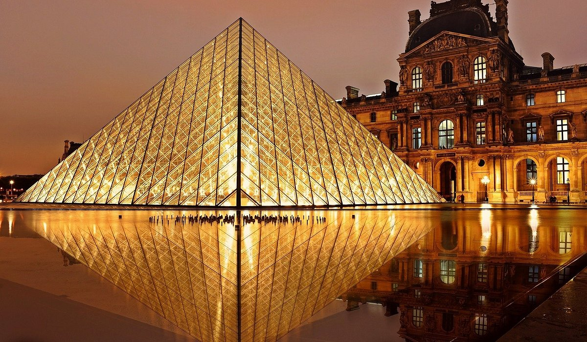
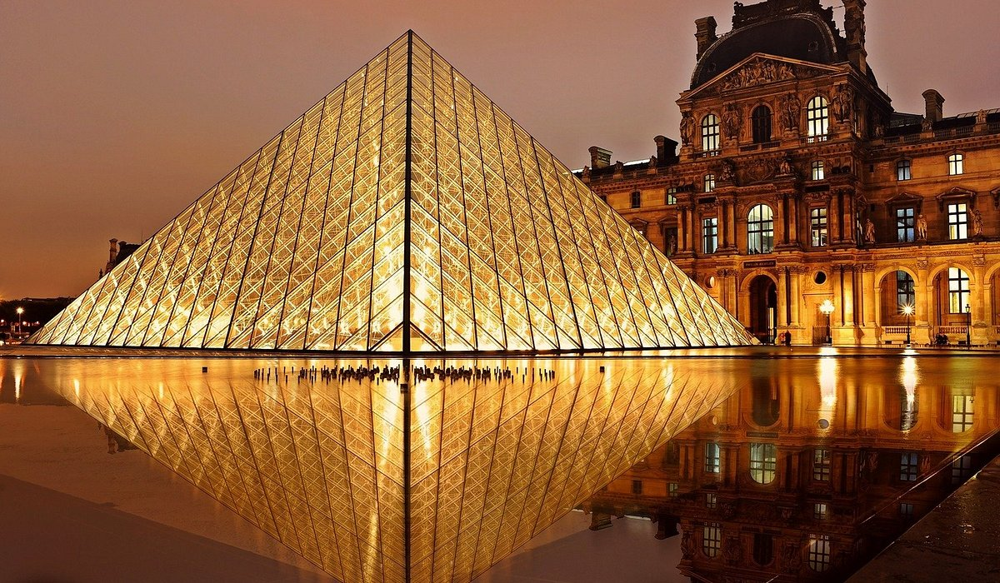

Ben
Kimim?
Uzun hikaye... ama özetlemek gerekirse;
Merhaba dostlar, Klavyenin başına geçtim ve sizinle biraz zaman geçirmek için buradayım. Ben, kodların ve algoritmaların büyülü dünyasında kaybolan bir bilgisayar mühendisliği öğrencisiyim. Adım Elif ve bu blog yazısında size, benim gözümden bilgisayar mühendisliği yolculuğunu anlatmak istiyorum. Bilgisayar mühendisliği dünyasına ilk adımımı attığımda, sanki tam da kendime ait bir dünya bulmuş gibi hissettim. Kod satırları arasında kaybolmak, problemleri çözmek için kafa yormak, beni gerçekten heyecanlandıran şeyler oldu. Belki de bu yüzden bilgisayar mühendisliği, benim için sadece bir meslek değil, aynı zamanda bir tutku haline geldi. Hobilerim ve ilgi alanlarım arasında kod yazmak tabii ki ilk sırada geliyor. Farklı programlama dillerini öğrenmek, algoritmaları çözmek ve yeni projeler geliştirmek benim için adeta bir oyun haline geldi. Ancak, bilgisayarın başından kalkıp gerçek dünyayı da keşfetmekten hoşlanırım. Doğa yürüyüşleri yapmak, fotoğraf çekmek ve bazen de resim yapmak, bilgisayarın monitöründen uzaklaşıp doğanın güzelliklerini keşfetmemi sağlıyor. Bununla birlikte, bilişim dünyasındaki gelişmeleri takip etmek de benim için çok önemli. Yapay zeka, nesnelerin interneti, blockchain gibi konular sürekli olarak değişiyor ve gelişiyor. Bu değişimleri takip etmek, hem bilgimi güncel tutmama hem de gelecekteki kariyerim için fırsatları değerlendirmeme yardımcı oluyor. Bu blogda, kodlama deneyimlerimi, yeni öğrendiklerimi ve bilişim dünyasındaki güncel gelişmeleri sizinle paylaşacağım. Ayrıca, zaman zaman hobilerimden ve günlük yaşamımdan da bahsedeceğim. Belki birlikte bir projede çalışabiliriz, belki de bir problemi çözmek için bir araya geliriz. Kim bilir? Siz de benimle bu yolculuğa katılmak isterseniz, yorumlarınızı ve düşüncelerinizi bekliyorum. Birlikte kodların büyülü dünyasında kaybolmaya ne dersiniz? Görüşmek üzere,

 
